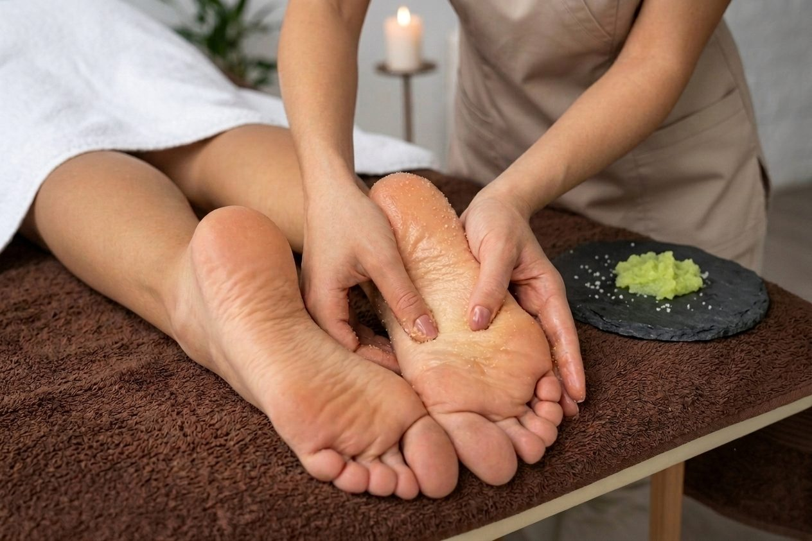
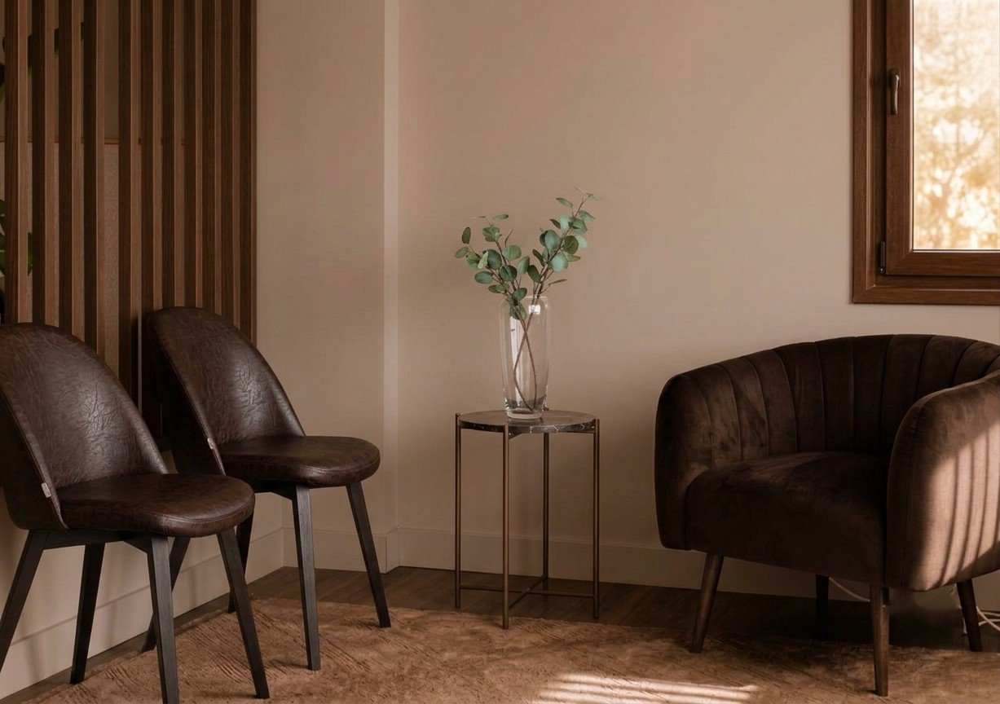
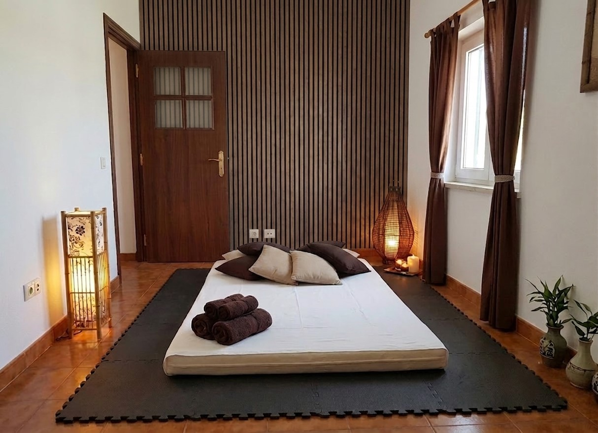

Centro de Terapias · Santa Maria da Feira & Esmoriz
Um espaço dedicado a cuidar de si
Massagens terapêuticas, holísticas e de relaxamento num ambiente pensado para o seu descanso. Sessões completamente personalizadas, desde o primeiro minuto.
0
Clientes satisfeitos
0
Técnicas especializadas
0
Espaços disponíveis
✓
Terapeuta certificada

O nosso espaço
Centro de Terapias e Bem-Estar
Um espaço pensado para o seu descanso desde o primeiro minuto. Iluminação suave, aromas naturais e silêncio — para que possa desligar do mundo e reconectar-se consigo.
- Terapeuta certificada com formação especializada
- Ambiente acolhedor com materiais e aromas naturais
- Combinação de técnicas adaptada a cada sessão
- Disponível para crianças, adultos, idosos, grávidas e desportistas
Os Nossos Serviços
Pode combinar técnicas na mesma sessão — adaptamos tudo ao que o seu corpo precisar hoje.



Confiança
O que dizem os clientes
Avaliação média de mais de 500 clientes
"Cheguei com muitas dores nas costas e saí completamente diferente. A Cecília tem um dom especial — sente onde está o problema antes de eu dizer uma palavra."
MA
Maria A.
Santa Maria da Feira
"Faço sessões mensais há dois anos. É o melhor investimento que faço na minha saúde. O espaço é uma ilha de paz no meio da agitação do dia a dia."
JF
João F.
Aveiro
"Fiz uma sessão de reflexologia pela primeira vez e não esperava sentir tanto alívio. A Cecília explica tudo com calma e faz-nos sentir muito à vontade."
SR
Sofia R.
Porto
Pronto para se sentir bem? O seu momento de pausa começa aqui.
Reserve a sua sessão em Santa Maria da Feira ou Esmoriz. Responderemos o mais rápido possível.
Reservar agora
Reservas
Marque a sua sessão
Preencha o formulário e entraremos em contacto brevemente.
Veja as Técnicas em demonstração
Pequenos vídeos que mostram como cada massagem é realizada — para que saiba exatamente o que esperar.
Blog & Bem-Estar artigos para o inspirar
Dicas práticas, curiosidades e artigos sobre saúde, relaxamento e terapias — escritos para si.

Disponível para todos
Crianças, adultos, idosos, grávidas e desportistas
Profissionalismo garantido
Terapeuta com formação certificada
Resultados reais
Mais de 500 clientes satisfeitos